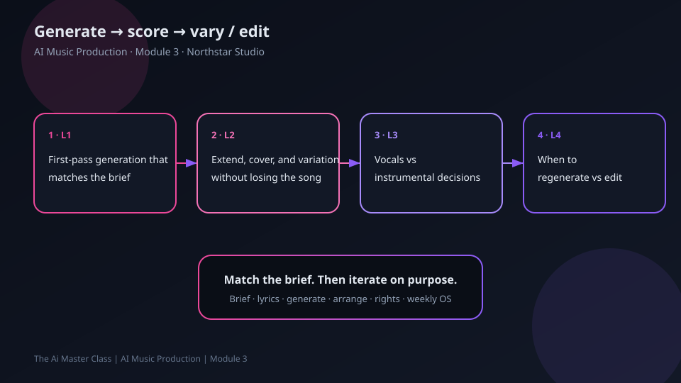

Lesson 3.2 — Extend, cover, and variation without losing the song
Module: Generate & iterate Duration: ~6–8 min teaching + ~4 min interactive Interactive: l02-interactive.html
Learning objective
Write extend/variation instructions that keep melody identity while changing arrangement or length.
What to do
- Watch the Lesson video once for the visual hook.
- Read Teaching (and the worked example) without rushing.
- Open
l02-interactive.htmland follow its Instructions until you hit the success state (this locks in: extend, cover, and variation without losing the song). - Rewrite or apply the idea once in your own words (one sentence is enough).
- You’re done when: you can explain — in plain language — Write extend/variation instructions that keep melody identity while changing arrangement or length. and
l02-interactive.htmlshows success.
Teaching
Vary the clothes, keep the spine
When extending or varying: name what must stay (hook melody contour, chorus lyric, BPM) and what may change (intro length, percussion density, key). 'Cover' here means stylistic variation of your track—not cloning a famous song.
Create a variation brief for Glass Horizon v2:
KEEP: hook contour, chorus lyric, ~104 BPM
CHANGE: longer intro (+8s), softer drums, brighter pads
DO NOT: change genre family; clone other artists.Talk-over narration
(Beat 1) “Keep/Change lists protect song identity.”
(Beat 2) “Variation ≠ clone of someone else's hit.”
Worked micro-example
KEEP: chorus lyric + hook contour. CHANGE: bridge to half-time drums for 8 bars.
Practice
Open l02-interactive.html and rewrite the vague prompt until the checker lights green.
Takeaway
Every variation lists KEEP vs CHANGE before you hit generate.
